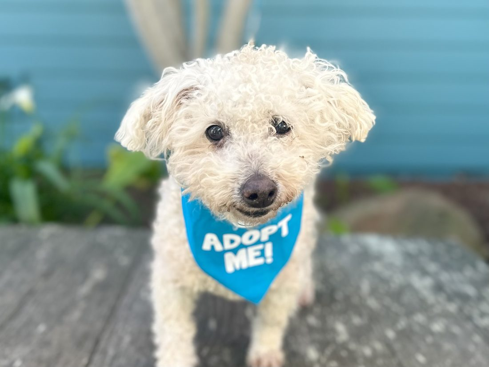

~12 years · Female · 10 lb · Yorkie
Bixby is a tiny yorkie with an enormous love for laps. She is twelve, fully house-trained, and looking for a quiet home with one or two people who appreciate a velcro dog. She rides happily in a car, sleeps through the night, and asks only for a soft blanket and a willing chin to rest against.

More of Bixby